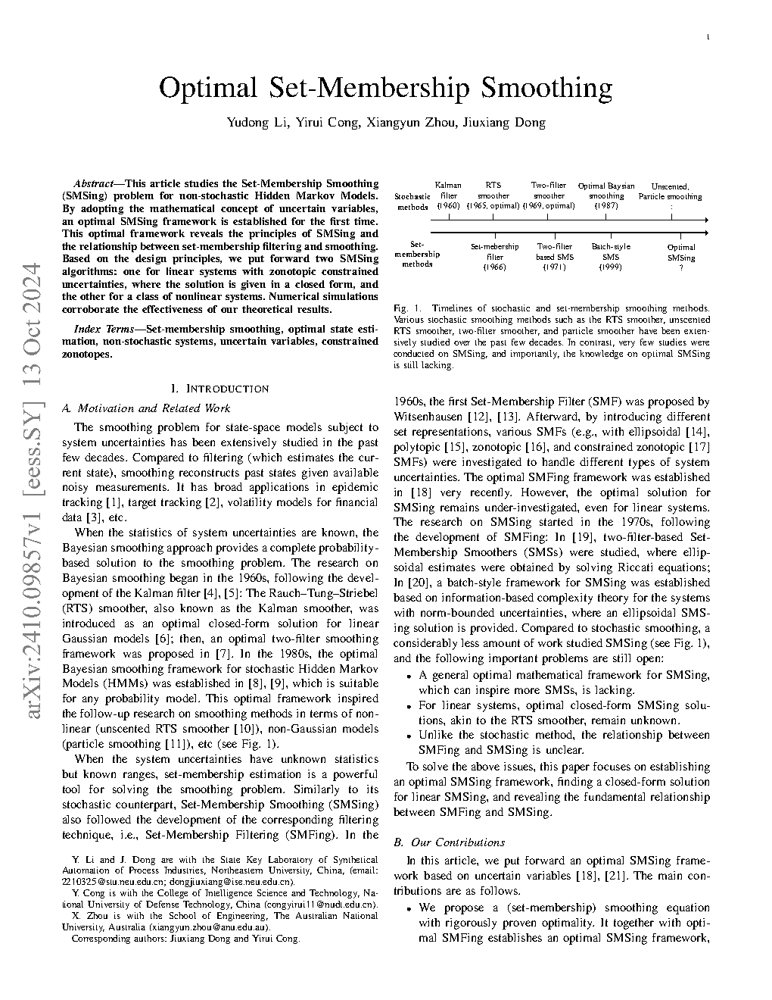
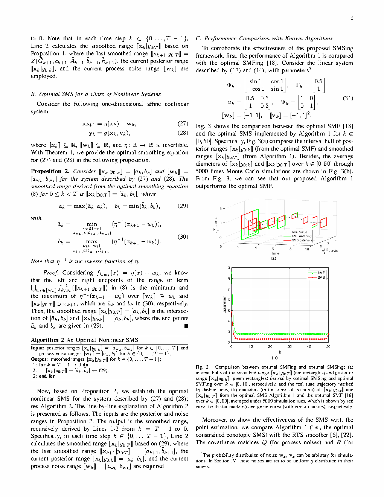
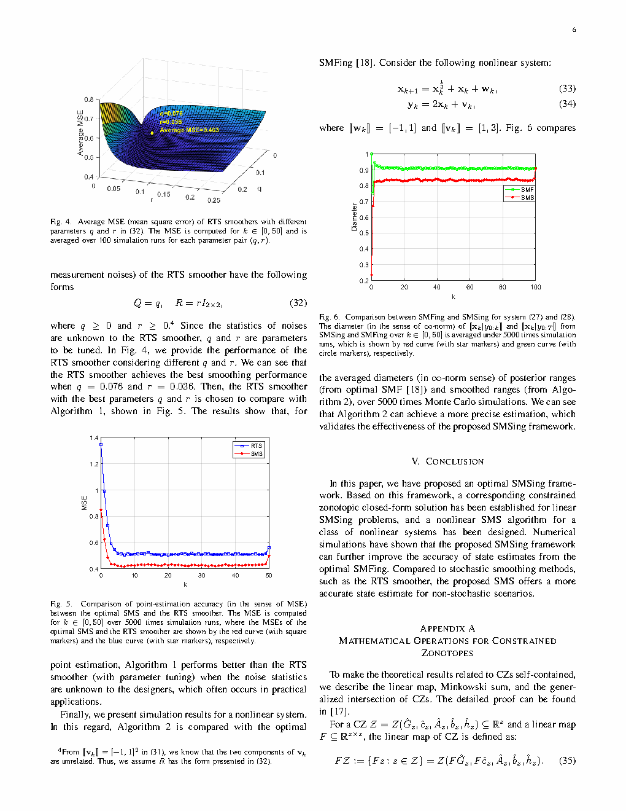

| Title | Optimal Set-Membership Smoothing（最优集合成员平滑） |
| Authors | Yudong Li1, Yirui Cong2 (corresponding), Xiangyun Zhou3, Jiuxiang Dong1 |
| Affiliation | 1. 东北大学 流程工业综合自动化国家重点实验室；2. 国防科技大学 智能科学学院；3. 澳大利亚国立大学 工程学院 |
| Venue | IEEE Transactions on Automatic Control, accepted 2025 (published online 2026). arXiv:2410.09857, Oct 2024. 7 pages. |
| DOI / Links | arXiv:2410.09857 | Source |
| TL;DR | 首次为非随机隐藏马尔可夫模型建立最优集合成员平滑（SMSing）理论框架。基于 uncertain variable 数学概念，证明最优平滑集合等于滤波后验与动力学的逆像之交（Theorem 1），揭示了滤波与平滑之间的严格数学关系。对线性 zonotope 约束不确定性给出闭式解（Corollary 1），并扩展到一类非线性系统。核心结论：最优平滑的范围永远不会比最优滤波的范围更大——这在集合成员框架中可以直接证明，但在贝叶斯框架下对一般非线性系统无法直接推出。 |
| Inspiration Source | What Insight It Inspired | Type |
|---|---|---|
| Uncertain variables (Nair, 2013; Khargonekar, 1993) | uncertain variable 的"条件值域"可以用集合论精确刻画，天然支持"滤波-平滑"的前向-后向耦合——因为它不需要概率测度，只需集合包含关系 | 数学框架 |
| 贝叶斯平滑中的前向-后向算法 (Kalman smoother / RTS smoother) | 前向滤波输出作为后向平滑的输入——这一计算结构在集合成员框架中也成立，但需要证明其最优性（而非启发式组合）。本文给出了严格证明 | 算法结构 |
| 集合成员滤波 (SMFing) 中的可行集构造 | SMFing 已经定义了最优滤波（Lemma 3）——平滑只需在此基础上加入未来信息。关键是找到一个数学上正确的"未来信息反向传播"操作，本文发现是动力学的逆像（preimage） | 方法 |
| 约束 zonotope 代数 (Scott et al., 2016; Regruto et al.) | zonotope 对 Minkowski 和、线性映射、交集都封闭——这使得线性系统的平滑方程可以直接用 zonotope 代数写成闭式，不需要数值积分或采样 | 计算工具 |
flowchart TB
subgraph FORWARD["前向通道: 最优集合成员滤波 (Lemma 3)"]
direction LR
INIT["初始化: ⟦x₀⟧"] --> PRED["预测: ⟦x_k|y_{0:kᐨ1}⟧ = f_{kᐨ1}( ⟦x_{kᐨ1}|y_{0:kᐨ1}⟧, ⟦w_{kᐨ1}⟧ )"]
PRED --> UPDATE["更新: ⟦x_k|y_{0:k}⟧ = g_k⁻¹({y_k}) ∩ ⟦x_k|y_{0:kᐨ1}⟧"]
UPDATE -->|k++| PRED
end
subgraph BACKWARD["后向通道: 最优集合成员平滑 (Theorem 1)"]
direction RL
INIT_B["终端: ⟦x_T|y_{0:T}⟧ = ⟦x_T|y_{0:T}⟧"] --> BACK["后向递推: ⟦x_k|y_{0:T}⟧ = f_k⁻¹(⟦x_{k+1}|y_{0:T}⟧) ∩ ⟦x_k|y_{0:k}⟧"]
BACK -->|k--| BACK
end
subgraph RESULT["平滑结果"]
SMOOTHED["{⟦x_k|y_{0:T}⟧} ⊂ {⟦x_k|y_{0:k}⟧}"]
GUARANTEE["保证: 真值始终 ∈ 平滑集 ⊆ 滤波集"]
end
FORWARD -->|"存储所有 ⟦x_k|y_{0:k}⟧"| BACKWARD
BACKWARD --> RESULT
classDef forward fill:#e8f0fe,stroke:#3b82f6,stroke-width:2px,color:#1d4ed8
classDef backward fill:#f0ebfd,stroke:#8b5cf6,stroke-width:2px,color:#6d28d9
classDef result fill:#e6f7ee,stroke:#10b981,stroke-width:2px,color:#047857
class INIT,PRED,UPDATE forward
class INIT_B,BACK backward
class SMOOTHED,GUARANTEE result
flowchart TD
subgraph FOUNDATION["理论基础: Uncertain Variables"]
UV["Uncertain Variable x: 可测函数 Ω→X, 范围 ⟦x⟧"]
LR["Lemma 1: Law of Total Range ⟦x⟧ = ∪_y ⟦x|y⟧"]
BR["Lemma 2: Bayes Rule for UV ⟦x|y⟧ = {x: ⟦y|x⟧ ∩ {y} ≠ ∅}"]
end
subgraph FILTERING["最优滤波 (Lemma 3)"]
SMF_PRED["预测: 动力学前向传播"]
SMF_UPDATE["更新: 逆测量映射 + 交集"]
end
subgraph SMOOTHING["最优平滑 (Theorem 1)"]
TEQ["⟦x_k|y_{0:T}⟧ = [∪_w f_{k,w}⁻¹(⟦x_{k+1}|y_{0:T}⟧)] ∩ ⟦x_k|y_{0:k}⟧"]
KEY["关键: 逆像 f_k⁻¹ 将未来约束反向投影到当前时刻"]
end
subgraph LINEAR["线性系统 (Corollary 1)"]
LEQ["⟦x_k|y_{0:T}⟧ = [ker(Φ_k) ⊕ Φ_k⁺(⟦x_{k+1}|y_{0:T}⟧ ⊕ Γ_k⟦-w_k⟧)] ∩ ⟦x_k|y_{0:k}⟧"]
end
FOUNDATION --> FILTERING
FILTERING --> SMOOTHING
SMOOTHING --> LINEAR
classDef found fill:#fef7ed,stroke:#f59e0b,stroke-width:2px,color:#92400e
classDef filt fill:#e8f0fe,stroke:#3b82f6,stroke-width:2px,color:#1d4ed8
classDef smooth fill:#f0ebfd,stroke:#8b5cf6,stroke-width:2px,color:#6d28d9
classDef lin fill:#e6f7ee,stroke:#10b981,stroke-width:2px,color:#047857
class UV,LR,BR found
class SMF_PRED,SMF_UPDATE filt
class TEQ,KEY smooth
class LEQ lin
| 类别 | 内容 | 维度 |
|---|---|---|
| 输入 | (1) 系统动力学模型 $f_k(\cdot,\cdot)$ 和观测模型 $g_k(\cdot,\cdot)$；(2) 噪声的有界集合 $\llbracket\mathbf{w}_k\rrbracket, \llbracket\mathbf{v}_k\rrbracket$；(3) 观测序列 $\{y_k\}_{k=0}^T$；(4) 初始状态范围 $\llbracket\mathbf{x}_0\rrbracket$ | 模型结构 + 集合描述 + 数据 |
| 输出 | 每个时刻 $k$ 的最优平滑状态集 $\llbracket\mathbf{x}_k | y_{0:T}\rrbracket$——保证包含真值且比滤波集更紧 | 集合序列（通常用 zonotope / interval 表示） |
| 目标 | 建立最优 SMSing 框架，揭示滤波与平滑的关系，为线性和非线性系统提供可计算算法 | 理论 + 算法 |
这是一个理论框架+算法设计的工作。核心贡献不是一个新的特定应用场景，而是为集合成员估计领域补上了"平滑"这一环——此前 SMFing（滤波）已有大量研究，但 SMSing（平滑）缺乏统一的最优框架。场景：任何可以用非随机隐藏马尔可夫模型建模的系统（目标跟踪、故障诊断、机器人定位等），当噪声统计未知但界已知时，都可以使用本框架进行最优平滑估计。
⚠ 表头用英文，正文用中文
| Prior Method | Core Idea | Why It Fails |
|---|---|---|
| Bayesian Smoothing (RTS smoother, particle smoother) | 基于概率模型的前向-后向递推：$p(x_k|y_{0:T}) \propto p(x_k|y_{0:k}) \int p(x_{k+1}|x_k) p(x_{k+1}|y_{0:T}) / p(x_{k+1}|y_{0:k}) dx_{k+1}$ | 需要精确的噪声概率分布——这在许多工程场景中不可获得。此外，贝叶斯平滑对一般非线性系统无法保证"平滑后验比滤波后验更集中"——它是重新加权，不是收缩。 |
| Set-Membership Filtering (SMFing) only | 只使用过去和当前观测进行状态估计：给定 $y_{0:k}$，计算可行状态集 | 丢弃了未来信息——如果已知后续观测 $y_{k+1:T}$，它们也应该能帮助约束 $k$ 时刻的状态。单独滤波无法利用这种信息。 |
| Heuristic SM Smoothing | 将滤波集合与基于动力学后向投影的集合简单取交集，但缺乏最优性证明 | 没有证明交集是最优的（即最小的可行集）。可能过度保守（交集太大）或丢失真值（交集太小，如果数学推导不正确）。 |
| Moving Horizon Estimation (MHE) | 在滑动窗口内求解约束优化问题来估计状态 | MHE 本质上是"批量优化"而非"递推平滑"——计算量随窗口长度增长，且不提供完整的后向递推理论。 |
本文的核心算法包括两个部分：（1）最优集合成员滤波（SMFing, Lemma 3）——前向运行；（2）最优集合成员平滑（SMSing, Theorem 1）——后向运行。以下逐一拆解关键公式。
LaTeX rendered by MathJax. 显示公式用 $$...$$，行内公式用 $...$。⚠ 符号解释请用中文。
| 参数 | 含义 | 为什么重要 |
|---|---|---|
| $\llbracket\mathbf{w}_k\rrbracket$ | 过程噪声的有界集合（如区间 $[-w_{\max}, w_{\max}]$） | 噪声界越大 → 预测范围越宽 → 滤波/平滑精度越低。需要从物理或标定中获得紧界 |
| $\llbracket\mathbf{v}_k\rrbracket$ | 量测噪声的有界集合 | 直接影响更新步的逆测量映射范围——过估计会导致过度保守 |
| $T$ (总时间步数) | 观测序列长度 | 平滑的"未来信息量"随 $T-k$ 增大——但计算量也随 $T$ 增长 |
| $\Phi_k$ 的秩 | 状态转移矩阵的秩（线性系统） | 决定 $\ker(\Phi_k)$ 的维度——零空间越大，逆像的"模糊度"越高 |
| zonotope 生成元数量 | 表示集合的复杂度 | 每次交集和 Minkowski 和操作增加生成元数量——需要定期降阶 |
理解本文需要掌握三个关键基础：uncertain variable 的数学理论（为什么可以用集合代替概率分布）、前向-后向的信息耦合机制（为什么平滑比滤波更紧）、线性系统中 zonotope 代数的封闭性（为什么可以闭式计算）。
uncertain variable 理论的强大之处在于：它提供了两个关键引理，分别对应概率论中的"全概率公式"和"贝叶斯公式"——但用纯集合论语言表述，不需要概率。
从 Theorem 1 的结构可以看出平滑的直觉：
约束 zonotope（constrained zonotope）的定义：
📷 论文原图截图。图片保存至 figures/ 子目录。命名 fig1.png ~ fig3.png 即可自动显示。

📷 请将截图保存为figures/fig1.png本图展示了：滤波（仅用过去信息）和平滑（用全部信息）之间的本质区别。滤波集合（蓝色区域）是基于 $y_{0:k}$ 的可行状态范围——它包含了所有与过去观测一致的状态。平滑集合（紫色区域，滤波的子集）在此基础上加入了未来观测 $y_{k+1:T}$ 通过动力学反向传播的约束（红色虚线区域）——两者的交集产生更紧的估计。

📷 请将截图保存为figures/fig2.png本图展示了：完整的前向-后向算法流程。上半部分：前向滤波（Lemma 3）从 $k=0$ 到 $k=T$ 计算并存储每个时刻的滤波后验。下半部分：后向平滑（Theorem 1）从 $k=T$ 反向到 $k=0$，每步将滤波后验与逆像取交集。两条虚线箭头表示信息流向：滤波结果被平滑消费，平滑的更高精度可以用于后续评估（如故障检测阈值）。

📷 请将截图保存为figures/fig3.png本图展示了：数值仿真中平滑集合和滤波集合的体积/宽度对比。横轴是时间步 $k$，纵轴是集合的某种度量（如 zonotope 的体积或各维度的最大宽度）。平滑曲线（紫色）始终在滤波曲线（蓝色）之下——验证了理论结论。
| 数据问题 | 潜在困难 | 严重程度 |
|---|---|---|
| 噪声界误估（过低） | 如果真实噪声偶尔超出预设界 → 真值可能不在估计集中 → 集合成员保证失效。需要更保守的过估计或在线自适应界 | ★★★★★ |
| 模型误差 | $f_k$ 和 $g_k$ 的建模误差会导致逆像和预测步的偏移 → 集合的中心漂移 → 真值可能偏离估计集。对于长期预测尤其严重 | ★★★★ |
| 离散化误差 | 如果连续系统被离散化 → 离散化误差会在前向-后向递推中累积 → 需要额外的误差界或更细的时间步长 | ★★★ |
| 集合降阶的精度损失 | 每 $n$ 步降阶一次 zonotope → 极端情况下可能损失 > 50% 的精度 → 需要在降阶频率和计算效率之间平衡 | ★★★ |
| 参考文献 | 为什么重要 |
|---|---|
| Nair (2013) — A non-stochastic information theory for communication and state estimation. IEEE TAC | uncertain variable 理论的奠基性工作——本文的数学框架直接建立在此之上。理解 UV 理论是理解所有非随机估计方法的前提。 |
| Scott, Raimondo, Marseglia, Braatz (2016) — Constrained zonotopes: A new tool for set-based estimation. Automatica | 约束 zonotope 的原始论文——揭示了 zonotope 对交集操作的封闭性，这是本文线性系统算法（Corollary 1）能闭式计算的关键。 |
| Combastel (2005) — A state bounding observer based on zonotopes. ECC | 最早将 zonotope 用于集合成员观测器的工作之一——为 SMFing 的计算效率奠定了基础。 |
| Khargonekar (1993) — $H_\infty$ estimation and robust control. Various | $H_\infty$ 滤波与集合成员滤波在思想上同源（都关心最坏情况保证），理解 $H_\infty$ 框架有助于理解集合成员方法的动机和局限。 |